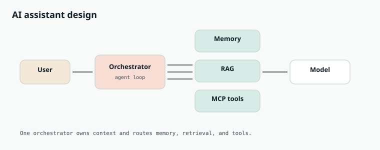

AI Engineering
Chapter 42
Design: an AI agent
Now put the whole part on one whiteboard. You are designing an assistant that answers from private documents with citations, remembers a conversation, and can take actions like opening a ticket — without becoming a liability.

Requirements, said out loud
- Answer from company knowledge with citations; refuse when unsupported.
- Hold multi-turn context and durable preferences.
- Take gated actions through tools (ticket, email draft, calendar hold).
- Stay within latency and cost budgets; leave an audit trail.
Reads dominate. Correctness and traceability beat cleverness.
Architecture story
An orchestrator owns the turn. It assembles context (policy, profile, memories, RAG hits, skills), calls the model, and if the model requests tools, executes them through MCP servers, then loops. RAG supplies knowledge. Memory supplies continuity. Skills supply procedures. MCP supplies actions and external data. Guardrails wrap the outside.
| Piece | Responsibility | Hardening |
|---|---|---|
| Orchestrator | Loop, budgets, logging | Step caps, timeouts |
| RAG | Private knowledge | ACL filter, citations |
| Memory | Continuity | User-visible edits/deletes |
| MCP tools | Side effects | Allowlist + human approval |
| Skills | Procedures | Versioning, evals |
| Model | Reason + write text | Low temp for actions |
A single turn, narrated
- Authenticate the user; load profile and permissions.
- Classify risk: Q&A vs action.
- Retrieve memories and RAG chunks filtered by ACL.
- Match a skill if the task is procedural.
- Call the model with tools available for this risk tier.
- If tool calls appear, execute, observe, and loop until final answer or budget exhausts.
- Validate output (schema, citations present, policy).
- Persist new memories and emit telemetry.
def handle_turn(user, message, deps):
ctx = deps.assemble_context(user, message)
messages = deps.render_messages(ctx)
tools = deps.tools_for(user, risk=ctx.risk)
for _ in range(deps.max_steps):
out = deps.model(messages, tools=tools)
if not out.tool_calls:
answer = deps.validate(out.content, ctx)
deps.save_memory(user, message, answer)
return answer
messages.append(out)
for call in out.tool_calls:
deps.authorize(user, call)
result = deps.mcp.call(call)
messages.append({"role": "tool", "content": result, "tool_call_id": call.id})
return deps.fallback_timeout()
Reliability: guardrails and evals
Ship with prompt-injection defenses, PII scrubbing where needed, allowlisted tools, and human approval for irreversible actions. Build eval sets for retrieval, faithfulness, tool success, and end-to-end tasks. Add tracing so a bad answer can be replayed.
Interview close
When someone asks you to “design ChatGPT for our company,” tell this story in order: model as token engine → prompt contract → RAG for knowledge → memory for continuity → agent loop for actions → MCP for integrations → skills for procedures → guardrails and evals for trust. That is the whole part, compressed into one design you can defend.
Cost and latency plot
Break budgets by stage: retrieval, rerank, model tokens in/out, tools. Cache embeddings and frequent retrievals. Use a small model for routing and a larger one for final answers. In interviews, draw the sequence diagram with p50/p95 targets — that is senior energy.
Rollout plan
Ship read-only Q&A first, then memory, then tools behind feature flags and allowlists. Add eval gates in CI for a golden set. Expand skills library as support teams teach procedures. The architecture stays stable while the content grows.
Threat model in one paragraph
Attackers will put instructions in uploaded PDFs, ticket descriptions, and web pages. Your defense layers: treat retrieved text as data, allowlist tools, require confirmation for side effects, strip or sandbox HTML, and monitor anomalous tool sequences. Mentioning this without drama in a design interview is rare and impressive.
What “done” looks like in six months
A trusted internal assistant: 80%+ of policy questions answered with citations, average two tool calls on action workflows, human approval on sends, weekly eval report in Slack, and a skills library owned by ops. The model is almost boring. The system around it is the product.
Interview drill — Capstone AI design
Combine RAG, tools, memory, eval, and tenancy into one coherent story.
More drills in the Interview Lab.
Q1. End-to-end AI assistant
Design the production assistant.
- Gateway: auth, quota, tracing.
- Router: chat vs RAG vs agent tools.
- Memory + retrieval with ACL.
- Guardrails + HITL for irreversible actions.
- Offline eval gates + online metrics.
Drill the pieces in AI Lab Q1, Q4, Q8, Q10.
Q2. Multi-tenant cost controls

Q3. Observability
What do you log?
request id, prompt version, retrieved doc ids, tool calls, token counts, latency, cost, feedback — redact PII.
Q4. Streaming UX
Stream tokens safely.
SSE from gateway; cancel on disconnect; buffer tool JSON until valid; backpressure.